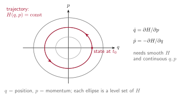
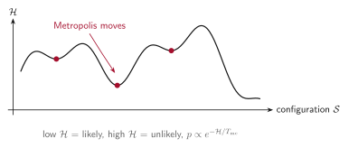
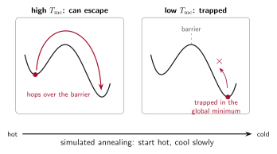
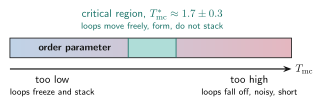
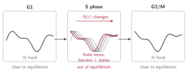

The Hamiltonian idea, and where RepliSage departs from it¶
RepliSage is written in the language of a Hamiltonian \(\mathcal{H}\), but it is not a Hamiltonian in the strict sense. This page explains what the word means, what we borrow from it, and what we deliberately give up. It is worth reading once, because it tells you how far the results can be pushed.
In analytical mechanics¶
In classical mechanics, a system with \(n\) degrees of freedom is described by positions \(q = (q_1, \dots, q_n)\) and their conjugate momenta \(p = (p_1, \dots, p_n)\). The pair \((q, p)\) is a point in phase space, a space with \(2n\) dimensions, and the whole state of the system at one moment is one point in it.
The Hamiltonian \(H(q, p)\) is a function on phase space, usually the total energy (kinetic plus potential). It determines the motion through Hamilton's equations:

Two things are worth noticing. First, the formalism relies only on theory and on the variables \(q\) and \(p\): given \(H\), the future follows. Second, it needs derivatives, so \(H\) must be smooth and the variables continuous. If \(H\) does not depend on time, energy is conserved.
In statistical mechanics¶
With a huge number of particles we cannot follow every trajectory, so statistical mechanics asks a different question: how likely is each state? For a system in equilibrium with a heat bath at temperature \(T\), the answer is the Boltzmann distribution,
where \(\mathcal{S}\) is a state, \(\mathcal{Z}\) is the normalisation (partition function) and \(k\) is the Boltzmann constant. Here the Hamiltonian is only an energy function: you do not integrate any equations of motion, you only compare energies, and a Monte Carlo method such as Metropolis samples the distribution (see Monte Carlo, MCMC and Metropolis).
This formulation is elegant, but it can break down in practice. Realistic systems have non-linear interactions and very many degrees of freedom, so the energy landscape is rugged, exact solutions are out of reach, and equilibrium may not be reached at all.

What RepliSage borrows¶
RepliSage is an effort to use a pseudo-Hamiltonian formalism, in the spirit of statistical physics. We write one energy function,
over the configuration \(\mathcal{S}\) (loop positions \((m_i, n_i)\) and epigenetic states \(s_k\)), and sample \(p(\mathcal{S}) \propto e^{-\mathcal{H}/T_{\text{mc}}}\) with Metropolis Monte Carlo. This gives a transparent way to say what the model likes (long loops, legs on CTCF sites, no crossing, no loops across forks, similar neighbouring states), and to explore many configurations, with the full Hamiltonian machinery left aside.
Temperature in RepliSage¶
What temperature does in Monte Carlo. A move that raises the energy by \(\Delta\mathcal{H}\) is accepted with probability \(e^{-\Delta\mathcal{H}/T_{\text{mc}}}\). At low \(T_{\text{mc}}\) the system almost only goes downhill, so it settles into the nearest valley of the energy landscape, which may be only a local minimum. At high \(T_{\text{mc}}\) it accepts uphill moves often, and can cross barriers, but it also never settles.
Why simulated annealing helps. Simulated annealing starts hot and cools slowly. While hot, the system explores widely and escapes shallow traps; as it cools, it gradually commits to deep valleys, so it is much more likely to end in a good, low-energy state than if it had been quenched cold straight away.

In RepliSage: no simulated annealing
RepliSage has no simulated annealing option, on purpose. Annealing finds one good low-energy state of a fixed energy landscape. A RepliSage run is different: it follows the chromosome through three phases of the cell cycle, G1, S and G2/M, and the goal is to see how the structure changes between them, not to find the single best state.
- In S phase the landscape itself moves (see below), so the system is out of equilibrium and there is no fixed minimum to cool towards.
- If each phase had its own cooling schedule, the phases would end at different temperatures, and differences between them would partly reflect those temperatures and not the biology (loops, epigenetic states, replication forks).
- So \(T_{\text{mc}}\) is one fixed value for the whole run, and G1, S and G2/M are sampled with the same rules. Differences between phases come only from the forks and the cell-cycle rules.
What replaces annealing is a careful choice of the order parameter, described below.
Physical temperature versus an order parameter. In models such as the Ising model and the Potts model, the temperature has a clear physical meaning: it is the temperature of the heat bath, and phase transitions happen at well-defined values of it. In RepliSage, it is hard to say what \(T_{\text{mc}}\) means biologically. There is no heat bath, and the energy terms are partly data-driven and balanced by hand. It is better to read \(T_{\text{mc}}\) as an order parameter: a single knob that sets how ordered the loop system is, from a very ordered, frozen state (low \(T_{\text{mc}}\)) to a noisy, disordered one (high \(T_{\text{mc}}\)).

In RepliSage: the critical region, not too low and not too high
What we need to understand is where to set this knob. There are two ways to get it wrong:
- Too low. The system almost only goes downhill. Loops get stuck where they first formed, and many pile up on top of each other (stacking: several loops sharing almost the same place, nested into one dense stack). The loops no longer move, so the result depends on the starting configuration, which is the trap that annealing tries to avoid.
- Too high. Moves are accepted almost at random. Loops fall off before they can grow, so they stay short, the epigenetic states are noisy, and the structure loses its organisation.
Between the two lies a critical region: loops can still move freely (slide, unbind and rebind elsewhere), and yet they are still able to form real loops, held at CTCF sites, without stacking on each other. This is where the model is most informative and compaction is strongest. In the paper it is around \(T^*_{\text{mc}} \approx 1.7 \pm 0.3\), and the default \(T_{\text{mc}} = 1.5\) lies inside it. The relation is not monotonic, so do not simply lower the value to get more loops.
How to find the critical region for your data
RepliSage has no built-in temperature scan, because the critical region is something to understand and not a schedule to run. Do a short scan by hand: run the same setup with a few values of t_mc in the [mc] section of the config (for example 0.8, 1.2, 1.5, 1.8, 2.5), and for each one look at the mean loop length, the energy trace and the contact maps in the report.
Choose the range where loops are long, the maps show clear loop and domain signals, the energy fluctuates around a flat line (loops are moving) and loops are not piled up in a few places. If you change the number of LEFs, the loop strengths or the data, check again, because the critical region moves with them.
Practical advice: do not read \(T_{\text{mc}}\) as a temperature in kelvin (the 3D simulation uses its own 310 K), keep it fixed across G1, S and G2/M, and compare phases only at the same value.
Why it is not a real Hamiltonian¶
There are three reasons, best stated plainly.
1. It is not defined on a phase space. There are no momenta, and the variables are discrete (bead indices and five epigenetic states), so there are no derivatives and no equations of motion. \(T_{\text{mc}}\) is a modelling parameter and not a physical temperature, and Monte Carlo steps are pseudotime. The 3D part is an ordinary molecular dynamics simulation, but its forces are built from the Monte Carlo output.
2. It is out of equilibrium, especially in S phase. The Boltzmann distribution assumes a fixed energy function and enough time to settle. In RepliSage the energy changes with time, \(\mathcal{H}(t)\), because replication forks move:
- loop extrusion barriers change, since \(f_{\text{rep}}(x,t)\) decides which loops are allowed, and forks push loops ahead of them;
- epigenetic states respond, since the field \(h_{t,k}\) shifts the preferred state of a bead when a fork passes, and the states can reorganise collectively, like a collective switch of a whole region between A-like and B-like.
Both effects are seen in cells: replisomes push cohesin along DNA, and B to A compartment switching has been observed in S phase and under replication stress. So during S phase the system is chasing a moving target and is never in equilibrium. G1 and G2/M are much closer to the equilibrium picture, because the rules stop changing.

3. The energy is largely data-driven. In the Monte Carlo, the binding potentials \(L\) and \(R\) come from your BEDPE file, the epigenetic field \(h_k\) comes from replication timing, and the forks come from the Replikator simulation. The coefficients are balanced so that the terms are comparable, not derived from first principles. In the 3D model, force constants and ties between sister chromatids also depend on the data and on the replication state. Think of the energy as a compact way to encode experimental knowledge and hypotheses, not as a law of nature.
How to read results¶
Use the Hamiltonian as a language for hypotheses: each term says what we assumed, and you can change it. Trust trends (for example, loops getting shorter in S phase) more than exact values, and remember that in S phase the sampled states are a response to the forks and not an equilibrium ensemble. See also Known limitations and the notation in the Monte Carlo model.